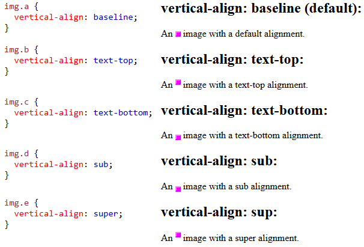
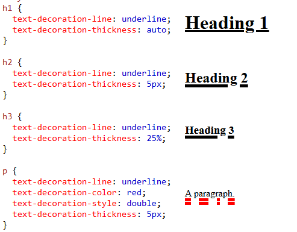

TEXT
-color
quyết định màu sắc của thẻ chữ( p, h1, h2,...)
-Text-align
căn lề cho đoạn văn bản
Text-align-last
căn lề cho văn bản xuống dòng
-direction & unicode-bidi
dùng để tùy chỉnh hướng của văn bản
- vertical-align
chỉnh lề của thẻ theo hướng dọc

text decoration
dùng để tùy chỉnh viền của văn bản
có 5 kiểu tùy chỉnh :
+ text-decoration-line: sử dụng để thêm đường kẻ cho văn bản
+ text-decoration-color: thay đổi màu sắc cho đường kẻ đó
+ text-decoration-style: thay đổi kiểu của đường kẻ trên
+ text-decoration-thickness: tùy chỉnh độ dày của đường kẻ
+ text-decoration: (line) (color) (style) (thickness) : tóm tắt các loại thẻ trên (line là bắt buộc)
example

text-transformation
dùng để xác định in hoa hoặc thường
với
uppercase : viết hoa tất cả
lowercase : viết thường tất cả
capitalize : viết hoa các chữ cái đầu tiền